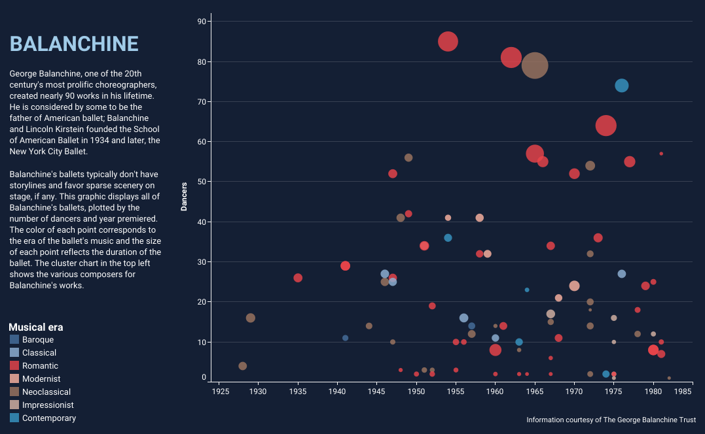

datapointe Data visualizations and reports on ballet The path to becoming a principal dancer at American Ballet Theatre and New York City Ballet Youth America Grand Prix semi-final locations and finals winners, 2000-2020 Choreographer George Balanchine’s ballets by duration, musical era & number of dancers 